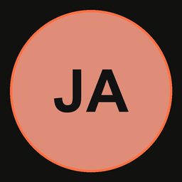
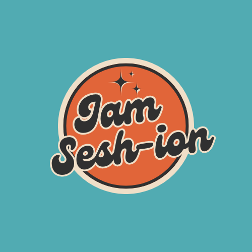
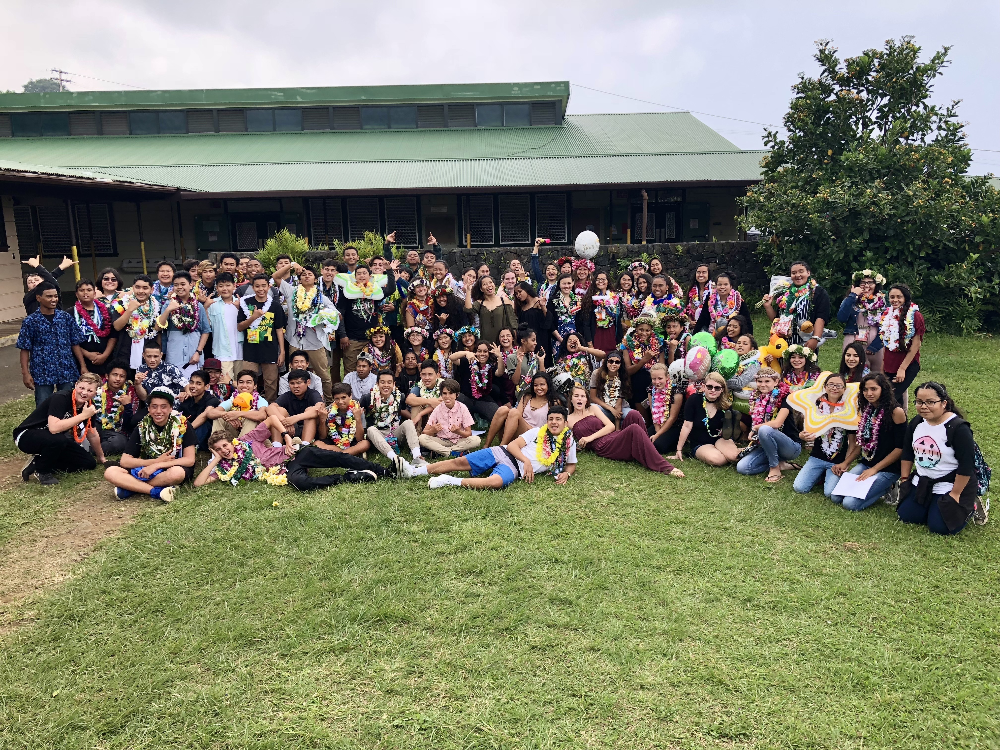
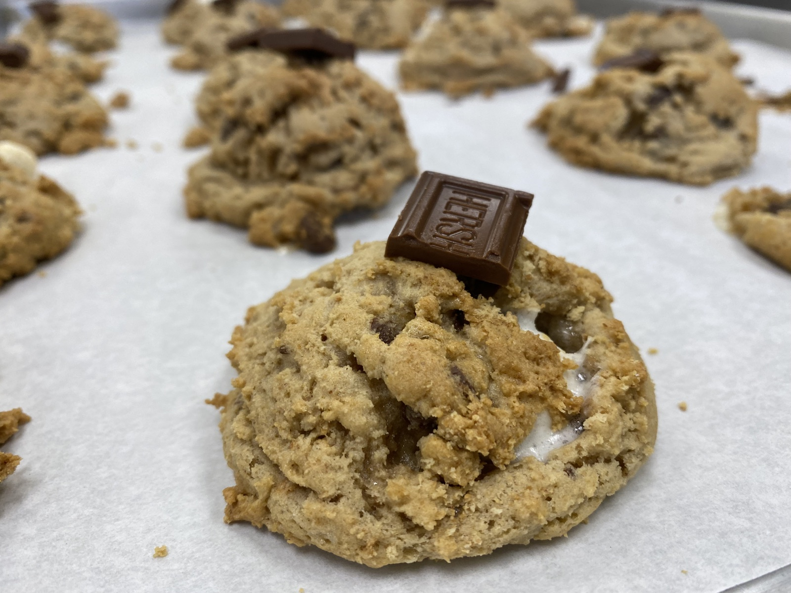
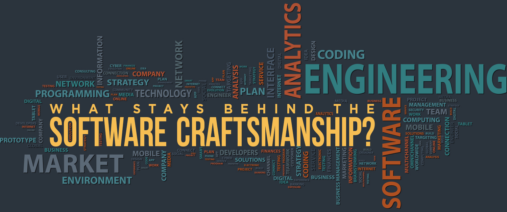

OPERATOR_PROFILEACTIVE
- Operator
- Justine Afaga
- Role
- CS_STUDENT
- Location
- Kailua Kona, HI
- Status
- GA @ ITEC, COLLEGE OF EDUCATION
[ OK ] mounting portfolio.workspace
[ OK ] loading projects, notes, and experience
[ OK ] starting interface
<developer /> just a local Hawai'i boy learning about computers
B.S. in Computer Science | B.A. in Philippine Language & Culture | Current master student at the University of Hawai'i at Mānoa
// Welcome to my workspacetype Developer = { name: "Justine Afaga", role: "CS Student", location: "Kailua Kona, HI", focus: ["software", "AI"], mission: "learn from other people", available: true};01 / ABOUT ME
justine@portfolio:~$ whoami
I am a current master student persuing my graduate degree in Computer Science, expected to graduate in Spring 2028. Born and raised on the Island of Hawai'i, aka the Big Island. I really like learning about AI and how it can be applied to real world situations. Utilizing my experience in web development and programming, as well as my second degree in Philippine Language and Culture, I aim to make applications that represents my commuinity and growth. Being a Fiipino-American Hawai'i born and raised, my goal is to create solutions that are both technological and relevant.
justine@portfolio:~$ cat mission.txt
I care about my family, my friends, and my community I grew up around. I want to give back to the people in my life who've made me the person I am today. Whether people I met through clubs, small project base work, teachers and professionals, or commmunity service, my mission is to make a positive impact from what they have taught me in the lives of other people.
02 / TOOLKIT

toolkitDrag or use arrow keys to explore
03 / JOURNEY
04 / SELECTED WORK

FEATUREDA community web app helping UH Mānoa musicians showcase their style, discover collaborators, and organize jam sessions.
A first-year Python exercise that transforms user input through capitalization and character substitutions to practice string logic.

A long-term research and presentation project examining homelessness and strengthening research, teamwork, and public speaking.

A student-led commercial bakery project centered on planning, delegation, mass production, and showing appreciation to school staff.
EDIT_HINT Project source notes live in /content/projects. See CUSTOMIZE.md for a quick editing map.
05 / LIFE & FIELD NOTES
PERSONAL_LOG A place for the person behind the code.
Notes about learning, community, identity, service, curiosity, and the life I’m building beyond a computer screen.

01.logSEP 25, 2024 · LEARNING
How the rules that once felt irritating helped me become a clearer teammate, writer, and computer science student.
Read the post →DEC 16, 2024 · REFLECTION
What stressful WODs, debugging, and follow-up questions taught me about using AI without giving up my own thinking.
Read the post →AUG 11, 2026 · COMMUNITY
Lessons from Leo Club, Tagnawa, and growing up in Hawaiʻi that now shape the kind of technologist I want to become.
Read the post →WRITE_NEXT Add future personal posts in /blog, then duplicate a card above to publish it here.
06 / CONNECTION
{
"status": "open_to_work",
"email": "afagajus@hawaii.edu",
"github": "@jafaga",
"linkedin": "Justine Afaga",
"location": "Honolulu, HI"
}// Waiting for connection_